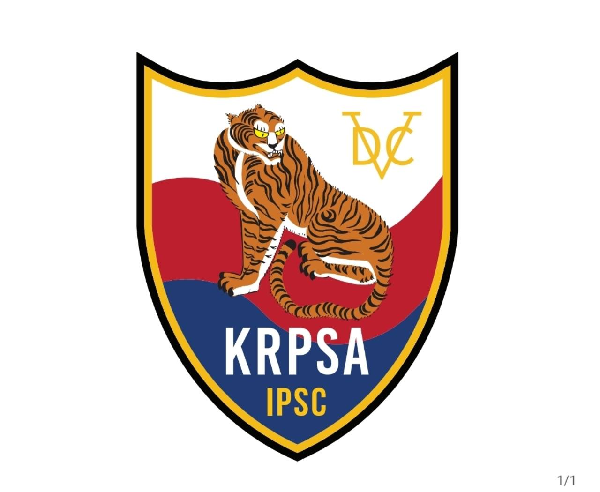
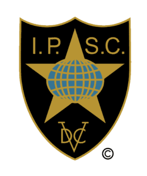

REPUBLIC OF KOREA
REPUBLIC OF KOREAAccuracy.
정확함
목표를 향한 흔들림 없는 집중.
한 발 한 발이 만들어내는 차이.

KRPSAIPSC KOREA정확함, 파워, 스피드.
대한민국 실용사격, KRPSA와 함께.
KRPSA는 대한민국을 대표하는 IPSC 가맹 협회입니다. 안전과 스포츠맨십을 바탕으로, 실용사격을 통해 한국과 세계를 연결합니다.
IPSC 공식 가맹 자료 ↗
하나의 스포츠. 같은 기준. 함께하는 도전.
모든 경기의 출발점은 안전. 규정과 책임을 지키는 스포츠 문화를 지향합니다.
서로를 존중하고 같은 규칙 아래 실력을 겨루는 스포츠맨십을 추구합니다.
대한민국의 선수와 실용사격 커뮤니티를 국제 IPSC 무대와 연결합니다.
IPSC(International Practical Shooting Confederation)는 국제실용사격연맹입니다. 실용사격은 다양한 경기 코스에서 정확도, 파워, 속도를 종합적으로 겨루는 역동적인 스포츠입니다.
IPSC 더 알아보기 ↗목표를 향한 흔들림 없는 집중.
한 발 한 발이 만들어내는 차이.
경기 규정이 정의하는 힘.
정확도와 속도를 잇는 균형.
판단과 움직임이 하나가 되는 순간.
시간 안에 완성하는 퍼포먼스.
KRPSA의 중심, Handgun과 Action Air.
나에게 맞는 실용사격을 만나보세요.
실탄 권총으로 정확도와 속도를 겨루는 실용사격. 다양한 스테이지와 장비별 디비전 안에서 나만의 도전을 이어갑니다.
핸드건 디비전 알아보기 ↓에어소프트 장비로 경험하는 실용사격. 독립된 IPSC 경기 규정 아래 집중력과 경기 감각을 쌓으며, KRPSA 입문의 첫걸음을 시작합니다.
입문 교육 알아보기 ↓디비전은 장비 특성에 따른 경기 구분입니다. 대표적인 차이만 간결하게 살펴보세요.
슬라이드에 광학 조준기를 장착하는 디비전. Production 승인 모델 목록에 한정되지 않으며, 컴펜세이터와 총열 포팅은 허용되지 않습니다.
디비전 규정 ↗IPSC 승인 목록에 등재된 양산형 권총을 사용하는 디비전. 광학 조준기 없이, 정해진 장비 조건 안에서 기본기를 겨룹니다.
디비전 규정 ↗승인된 Production 모델에 슬라이드 장착 광학 조준기를 더한 디비전. 양산형 권총의 기반과 광학 조준기의 시인성을 함께 경험합니다.
디비전 규정 ↗기계식 조준기를 사용하며, 빈 탄창을 장착한 권총이 규격 박스에 들어가야 하는 디비전. 광학 조준기, 컴펜세이터와 총열 포팅 없이 장비 규격 안에서 실력을 겨룹니다.
디비전 규정 ↗광학 조준기와 컴펜세이터 등 폭넓은 경기용 구성을 허용하는 디비전. 규정 안에서 장비 선택의 자유도가 높습니다.
디비전 규정 ↗그 밖에 Classic은 1911 스타일의 싱글스택 권총, Revolver는 리볼버로 경쟁합니다.
핸드건 디비전의 간단한 소개입니다. 장비 적합 여부와 세부 조건은 최신 IPSC 규정을 확인해 주세요. Action Air에는 별도 규정이 적용됩니다.
핸드건과 액션에어를 넘어,
다양한 장비로 이어지는 도전.
산탄총을 사용하는 종목. 다양한 표적과 코스 구성 안에서 정확도와 경기 수행 능력을 겨룹니다.
Open · Modified · Standard · Standard Manual소총을 사용하는 종목. 서로 다른 거리와 배치의 표적을 포함한 스테이지에서 실력을 겨룹니다.
Semi Auto Open · Semi Auto Standard · Manual Action Contemporary · Manual Action Bolt권총 탄약을 사용하는 카빈 종목. 광학 조준기 또는 기계식 조준기에 따라 디비전이 나뉩니다.
Optics · Iron림파이어 소총을 사용하는 종목. 별도의 IPSC 규정 아래 정확도와 속도를 겨룹니다.
Open · Standard.22LR 림파이어 권총을 사용하는 종목. 일반 핸드건과 구분된 경기 규정이 적용됩니다.
Open · Standard · ClassicIPSC 국제 종목 안내입니다. 국내 참여 가능 종목과 교육·대회 일정은 KRPSA에 문의해 주세요.
Action Air에서 Live Fire까지.
KRPSA의 3단계 입문 교육을 만나보세요.
에어소프트 장비로 실용사격을 경험하고, 안전한 스포츠 참여와 경기의 기본 흐름을 익힙니다.
안전 수칙과 경기장 에티켓, 레인지 명령을 배우며 책임 있는 사격 스포츠 참여를 준비합니다.
지도하에 실탄 사격을 경험하며, 앞서 배운 안전 원칙을 실제 사격 환경과 연결합니다.
교육 일정·장소·참가 조건과 입회 절차는 카카오톡으로 안내해 드립니다.
교육·입회 문의 →교육 신청부터 협회 입회까지. 카카오톡 ipsckorea로 편하게 문의해 주세요.
카카오톡에서 ID로 친구 추가 → ipsckorea를 검색해 주세요.